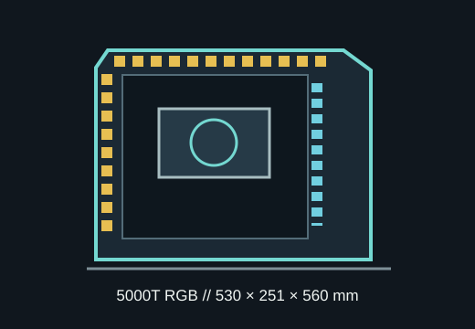

[ MODEL IDENTIFICATION // CORSAIR 5000T RGB ]
CORSAIR 5000T RGB
A roomy ATX mid-tower with 420 mm graphics-card clearance, 170 mm CPU-cooler height and front, top and side 360 mm radiator support.

MODEL DISTINCTION: This is the sculpted 5000T RGB chassis (CC-9011230 series), not the 5000D or 5000D Airflow, which have different dimensions and exterior panels.
Dimensions & fit specifications
| External dimensions | 530 × 251 × 560 mm (L × W × H); approximately 17 kg for the case. |
|---|---|
| Motherboards | Mini-ITX, microATX, ATX and E-ATX (up to 305 × 277 mm where supported); verify cable cutouts and tray clearance for wide boards. |
| GPU / CPU cooler / PSU | GPU length up to 420 mm; CPU cooler height 170 mm; PSU length up to 250 mm. |
| Radiators | Front and side support up to 360 mm radiators with fans up to 60 mm total thickness; roof supports up to 360 mm with up to 85 mm radiator/fan stack. Manufacturer also lists 280 mm fit by position. |
| Drive mounts | Up to five 2.5-inch SSDs or two 3.5-inch HDDs, using the included drive trays and positions. |
| Expansion | Seven vertical expansion positions plus two horizontal GPU positions; horizontal orientation may require an optional bracket/riser kit. |
Compatibility & preservation
The 5000T's large side-mount radiator and unusually thick roof radiator allowance are measured stack envelopes, not radiator-core dimensions. Check the chosen AIO/custom-loop thickness, motherboard VRM/RAM clearance, GPU power lead and front-panel wiring. The 170 mm air-cooler limit is comparatively restrictive for a wide showcase tower.
- Preserve the sculpted front/top panels, removable radiator bracket, filters, drive trays and iCUE lighting/fan controller.
- Keep the exact Quick Start Guide with the case; the 5000T layout differs from 5000D-family instructions.
- Confirm the regional product SKU and whether included fans/controller are present before restoration.
Manufacturer sources
- CORSAIR — 5000T RGB product specificationsManufacturer case dimensions, GPU/cooler/PSU limits, drive capacity and radiator limits.
- CORSAIR — 5000T RGB Quick Start Guide (PDF)Official chassis assembly and configuration document.